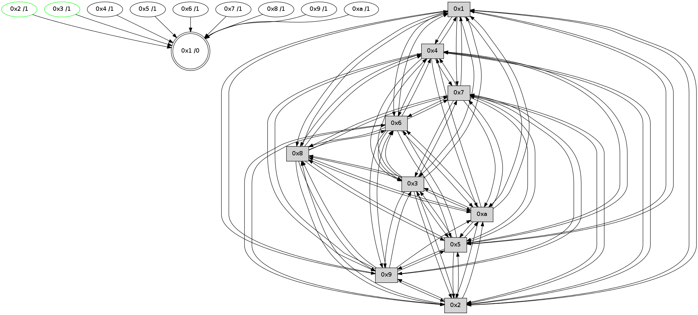

>> << IDX [start] -100 -25 -5 +0 +5 +25 +100 [475.001964092]
 Previous packets
----------------------------------------------------------------------
470.154627 beacon01(faad) #0 coord=01,02,03,04,05,06,07,0a,09,08 cycle=688.0ms assoc
-- color-indic=0 64 e4 26
470.164610 beacon02(faad) #0 coord=01,02,03,04,05,06,07,0a,09,08 cycle=688.0ms assoc 64 77 17
470.174609 beacon03(faad) #0 coord=01,02,03,04,05,06,07,0a,09,08 cycle=688.0ms assoc 64 0d 5a
470.184609 beacon04(faad) #0 coord=01,02,03,04,05,06,07,0a,09,08 cycle=688.0ms assoc 64 7a b0
470.194610 beacon05(faad) #0 coord=01,02,03,04,05,06,07,0a,09,08 cycle=688.0ms assoc 64 00 fd
470.204609 beacon06(faad) #0 coord=01,02,03,04,05,06,07,0a,09,08 cycle=688.0ms assoc 64 8e 2a
470.214613 beacon07(faad) #0 coord=01,02,03,04,05,06,07,0a,09,08 cycle=688.0ms assoc 64 f4 67
470.224615 beacon0a(faad) #0 coord=01,02,03,04,05,06,07,0a,09,08 cycle=688.0ms assoc 64 85 6c
470.234615 beacon09(faad) #0 coord=01,02,03,04,05,06,07,0a,09,08 cycle=688.0ms assoc 64 0b bb
470.244617 beacon08(faad) #0 coord=01,02,03,04,05,06,07,0a,09,08 cycle=688.0ms assoc 64 71 f6
470.256428 [Hello(6): seq=303 sym=2,3,5,4,7,9,8,10,1 sysInfo= stat=2:6,0,2,0/3:9,0,1,0/5:15,0,1,0/4:9,0,1,0/7:8,0,1,0/9:10,0,1,0/8:6,0,1,0/10:3,0,1,0/1:0,0,0,0]
470.261310 [Hello(1): seq=212 sym=4,2,9,5,10,3,8,6,7 sysInfo= stat=4:4,0,1,0/2:15,0,1,0/9:13,0,2,0/5:11,0,2,0/10:14,0,1,0/3:3,0,2,0/8:12,0,3,0/6:5,0,2,0/7:12,0,2,0]
470.264501 [Hello(7): seq=303 sym=2,3,5,6,4,8,9,10,1 sysInfo= stat=2:8,0,2,0/3:4,0,1,0/5:8,0,1,0/6:12,0,2,0/4:1,0,1,0/8:9,0,1,0/9:7,0,1,0/10:3,0,1,0/1:11,0,2,0]
470.267756 [STC(1) #0.4 to-color d=0]
----------------------------------------------------------------------
470.942760 beacon01(faad) #0 coord=01,02,03,04,05,06,07,0a,09,08 cycle=688.0ms assoc
-- color-indic=0 64 58 23
470.952743 beacon02(faad) #0 coord=01,02,03,04,05,06,07,0a,09,08 cycle=688.0ms assoc 64 cb 12
470.962741 beacon03(faad) #0 coord=01,02,03,04,05,06,07,0a,09,08 cycle=688.0ms assoc 64 b1 5f
470.972744 beacon04(faad) #0 coord=01,02,03,04,05,06,07,0a,09,08 cycle=688.0ms assoc 64 c6 b5
470.982744 beacon05(faad) #0 coord=01,02,03,04,05,06,07,0a,09,08 cycle=688.0ms assoc 64 bc f8
470.992743 beacon06(faad) #0 coord=01,02,03,04,05,06,07,0a,09,08 cycle=688.0ms assoc 64 32 2f
471.002743 beacon07(faad) #0 coord=01,02,03,04,05,06,07,0a,09,08 cycle=688.0ms assoc 64 48 62
471.012747 beacon0a(faad) #0 coord=01,02,03,04,05,06,07,0a,09,08 cycle=688.0ms assoc 64 39 69
471.022747 beacon09(faad) #0 coord=01,02,03,04,05,06,07,0a,09,08 cycle=688.0ms assoc 64 b7 be
471.032747 beacon08(faad) #0 coord=01,02,03,04,05,06,07,0a,09,08 cycle=688.0ms assoc 64 cd f3
471.043681 [STC(6)->1 #0.4 to-color d=1]
471.045458 [Hello(10): seq=236 sym=6,3,2,8,9,5,7,4,1 sysInfo= stat=6:0,0,2,0/3:15,0,1,0/2:8,0,0,0/8:6,0,3,0/9:13,0,2,0/5:5,0,2,0/7:6,0,2,0/4:0,0,1,0/1:4,0,3,0]
471.048599 [Hello(4): seq=304 sym=5,7,6,2,3,9,8,10,1 sysInfo= stat=5:11,0,2,0/7:9,0,2,0/6:14,0,1,0/2:15,0,0,0/3:4,0,1,0/9:15,0,2,0/8:10,0,3,0/10:9,0,0,0/1:0,0,4,0]
471.051478 [Hello(8): seq=247 sym=5,2,3,4,7,6,9,10,1 sysInfo= stat=5:2,0,1,0/2:11,0,0,0/3:11,0,0,0/4:2,0,0,0/7:10,0,2,0/6:2,0,2,0/9:2,0,1,0/10:1,0,0,0/1:9,0,4,0]
471.054302 [STC(8)->1 #0.4 to-color d=1]
471.055664 [Hello(5): seq=304 sym=7,6,4,3,1,9,8,10,2 sysInfo= stat=7:6,0,2,0/6:10,0,2,0/4:0,0,0,0/3:7,0,0,0/1:1,0,3,0/9:1,0,2,0/8:6,0,2,0/10:13,0,0,0/2:2,0,0,0]
471.058228 [Hello(2): seq=301 sym=4,5,7,6,3,9,8,10,1 sysInfo= stat=4:9,0,1,0/5:7,0,2,0/7:5,0,2,0/6:10,0,1,0/3:3,0,1,0/9:11,0,2,0/8:2,0,3,0/10:5,0,1,0/1:14,0,3,0]
471.061022 [Hello(9): seq=247 sym=5,2,3,4,7,6,8,10,1 sysInfo= stat=5:4,0,0,0/2:14,0,0,0/3:9,0,0,0/4:9,0,0,0/7:12,0,2,0/6:6,0,2,0/8:9,0,2,0/10:2,0,0,0/1:9,0,3,0]
471.063835 [STC(9)->1 #0.4 to-color d=1]
471.066323 [STC(2)->1 #0.4 to-color d=1]
471.067728 [STC(4)->1 #0.4 to-color d=1]
471.069545 [STC(7)->1 #0.4 to-color d=1]
471.071080 [STC(3)->1 #0.4 to-color d=1]
471.074144 [STC(10)->1 #0.4 to-color d=1]
471.076184 [STC(5)->1 #0.4 to-color d=1]
----------------------------------------------------------------------
471.730895 beacon01(faad) #0 coord=01,02,03,04,05,06,07,0a,09,08 cycle=688.0ms assoc
-- color-indic=0 64 8c 16
471.740877 beacon02(faad) #0 coord=01,02,03,04,05,06,07,0a,09,08 cycle=688.0ms assoc 64 1f 27
471.750877 beacon03(faad) #0 coord=01,02,03,04,05,06,07,0a,09,08 cycle=688.0ms assoc 64 65 6a
471.760877 beacon04(faad) #0 coord=01,02,03,04,05,06,07,0a,09,08 cycle=688.0ms assoc 64 12 80
471.770877 beacon05(faad) #0 coord=01,02,03,04,05,06,07,0a,09,08 cycle=688.0ms assoc 64 68 cd
471.780878 beacon06(faad) #0 coord=01,02,03,04,05,06,07,0a,09,08 cycle=688.0ms assoc 64 e6 1a
471.790879 beacon07(faad) #0 coord=01,02,03,04,05,06,07,0a,09,08 cycle=688.0ms assoc 64 9c 57
471.800884 beacon0a(faad) #0 coord=01,02,03,04,05,06,07,0a,09,08 cycle=688.0ms assoc 64 ed 5c
471.810883 beacon09(faad) #0 coord=01,02,03,04,05,06,07,0a,09,08 cycle=688.0ms assoc 64 63 8b
471.820882 beacon08(faad) #0 coord=01,02,03,04,05,06,07,0a,09,08 cycle=688.0ms assoc 64 19 c6
471.832365 [Hello(6): seq=304 sym=2,3,5,4,7,9,8,10,1 sysInfo= stat=2:7,0,3,0/3:9,0,2,0/5:0,0,2,0/4:10,0,2,0/7:9,0,2,0/9:11,0,2,0/8:7,0,2,0/10:4,0,2,0/1:1,0,1,0]
471.839682 [Hello(7): seq=304 sym=2,3,5,6,4,8,9,10 sysInfo= stat=2:8,0,2,0/3:4,0,2,0/5:8,0,2,0/6:12,0,2,0/4:1,0,1,0/8:9,0,1,0/9:7,0,1,0/10:3,0,2,0]
----------------------------------------------------------------------
472.519026 beacon01(faad) #0 coord=01,02,03,04,05,06,07,0a,09,08 cycle=688.0ms assoc
-- color-indic=0 64 30 13
472.529008 beacon02(faad) #0 coord=01,02,03,04,05,06,07,0a,09,08 cycle=688.0ms assoc 64 a3 22
472.539009 beacon03(faad) #0 coord=01,02,03,04,05,06,07,0a,09,08 cycle=688.0ms assoc 64 d9 6f
472.549008 beacon04(faad) #0 coord=01,02,03,04,05,06,07,0a,09,08 cycle=688.0ms assoc 64 ae 85
472.569010 beacon06(faad) #0 coord=01,02,03,04,05,06,07,0a,09,08 cycle=688.0ms assoc 64 5a 1f
472.579010 beacon07(faad) #0 coord=01,02,03,04,05,06,07,0a,09,08 cycle=688.0ms assoc 64 20 52
472.589014 beacon0a(faad) #0 coord=01,02,03,04,05,06,07,0a,09,08 cycle=688.0ms assoc 64 51 59
472.599015 beacon09(faad) #0 coord=01,02,03,04,05,06,07,0a,09,08 cycle=688.0ms assoc 64 df 8e
472.609014 beacon08(faad) #0 coord=01,02,03,04,05,06,07,0a,09,08 cycle=688.0ms assoc 64 a5 c3
472.620499 [Hello(4): seq=305 sym=5,7,6,2,3,9,8,10,1 sysInfo= stat=5:11,0,3,0/7:10,0,3,0/6:15,0,2,0/2:15,0,0,0/3:4,0,2,0/9:15,0,2,0/8:10,0,3,0/10:9,0,1,0/1:0,0,4,0]
472.623188 [Hello(3): seq=305 sym=1,7,6,2,4,8,9,10,5 sysInfo= stat=1:12,0,3,0/7:0,0,2,0/6:12,0,2,0/2:1,0,1,0/4:6,0,1,0/8:0,0,3,0/9:12,0,2,0/10:6,0,2,0/5:6,0,3,0]
472.626329 [Hello(9): seq=248 sym=5,2,3,4,7,6,8,10,1 sysInfo= stat=5:4,0,1,0/2:14,0,1,0/3:9,0,1,0/4:9,0,1,0/7:13,0,3,0/6:7,0,3,0/8:9,0,2,0/10:2,0,1,0/1:9,0,3,0]
472.628889 [Hello(2): seq=302 sym=4,5,7,6,3,9,8,10,1 sysInfo= stat=4:9,0,2,0/5:7,0,3,0/7:6,0,3,0/6:11,0,2,0/3:3,0,2,0/9:11,0,2,0/8:2,0,3,0/10:5,0,2,0/1:14,0,3,0]
472.631343 [Hello(10): seq=237 sym=6,3,2,8,9,5,7,4,1 sysInfo= stat=6:1,0,3,0/3:15,0,1,0/2:8,0,0,0/8:6,0,3,0/9:13,0,2,0/5:5,0,3,0/7:7,0,2,0/4:0,0,1,0/1:4,0,3,0]
472.634237 [Hello(5): seq=305 sym=7,6,4,3,1,9,8,10,2 sysInfo= stat=7:7,0,2,0/6:11,0,3,0/4:0,0,0,0/3:7,0,0,0/1:1,0,3,0/9:1,0,2,0/8:6,0,2,0/10:13,0,0,0/2:2,0,0,0]
472.637690 [Hello(8): seq=248 sym=5,2,3,4,7,6,9,10,1 sysInfo= stat=5:3,0,2,0/2:12,0,1,0/3:11,0,1,0/4:2,0,1,0/7:11,0,3,0/6:3,0,3,0/9:3,0,2,0/10:1,0,1,0/1:9,0,4,0]
----------------------------------------------------------------------
473.307158 beacon01(faad) #0 coord=01,02,03,04,05,06,07,0a,09,08 cycle=688.0ms assoc
-- color-indic=0 64 f4 1d
473.317141 beacon02(faad) #0 coord=01,02,03,04,05,06,07,0a,09,08 cycle=688.0ms assoc 64 67 2c
473.327141 beacon03(faad) #0 coord=01,02,03,04,05,06,07,0a,09,08 cycle=688.0ms assoc 64 1d 61
473.337140 beacon04(faad) #0 coord=01,02,03,04,05,06,07,0a,09,08 cycle=688.0ms assoc 64 6a 8b
473.347142 beacon05(faad) #0 coord=01,02,03,04,05,06,07,0a,09,08 cycle=688.0ms assoc 64 10 c6
473.357140 beacon06(faad) #0 coord=01,02,03,04,05,06,07,0a,09,08 cycle=688.0ms assoc 64 9e 11
473.367142 beacon07(faad) #0 coord=01,02,03,04,05,06,07,0a,09,08 cycle=688.0ms assoc 64 e4 5c
473.377146 beacon0a(faad) #0 coord=01,02,03,04,05,06,07,0a,09,08 cycle=688.0ms assoc 64 95 57
473.387145 beacon09(faad) #0 coord=01,02,03,04,05,06,07,0a,09,08 cycle=688.0ms assoc 64 1b 80
473.397146 beacon08(faad) #0 coord=01,02,03,04,05,06,07,0a,09,08 cycle=688.0ms assoc 64 61 cd
473.408323 [Hello(6): seq=305 sym=2,3,5,4,7,9,8,10,1 sysInfo= stat=2:8,0,3,0/3:10,0,2,0/5:1,0,2,0/4:11,0,2,0/7:10,0,2,0/9:12,0,2,0/8:8,0,2,0/10:5,0,2,0/1:1,0,1,0]
473.411609 [Hello(7): seq=305 sym=2,3,5,6,4,8,9,10 sysInfo= stat=2:9,0,2,0/3:5,0,2,0/5:9,0,2,0/6:12,0,2,0/4:2,0,1,0/8:10,0,1,0/9:8,0,1,0/10:4,0,2,0]
473.420140 [Hello(1): seq=214 sym=4,2,9,5,10,3,8,6,7 sysInfo= stat=4:6,0,2,0/2:1,0,2,0/9:15,0,3,0/5:13,0,3,0/10:0,0,2,0/3:4,0,3,0/8:14,0,4,0/6:5,0,3,0/7:13,0,3,0]
----------------------------------------------------------------------
474.095289 beacon01(faad) #0 coord=01,02,03,04,05,06,07,0a,09,08 cycle=688.0ms assoc
-- color-indic=0 64 48 18
474.105271 beacon02(faad) #0 coord=01,02,03,04,05,06,07,0a,09,08 cycle=688.0ms assoc 64 db 29
474.115274 beacon03(faad) #0 coord=01,02,03,04,05,06,07,0a,09,08 cycle=688.0ms assoc 64 a1 64
474.125273 beacon04(faad) #0 coord=01,02,03,04,05,06,07,0a,09,08 cycle=688.0ms assoc 64 d6 8e
474.135271 beacon05(faad) #0 coord=01,02,03,04,05,06,07,0a,09,08 cycle=688.0ms assoc 64 ac c3
474.145272 beacon06(faad) #0 coord=01,02,03,04,05,06,07,0a,09,08 cycle=688.0ms assoc 64 22 14
474.155273 beacon07(faad) #0 coord=01,02,03,04,05,06,07,0a,09,08 cycle=688.0ms assoc 64 58 59
474.165278 beacon0a(faad) #0 coord=01,02,03,04,05,06,07,0a,09,08 cycle=688.0ms assoc 64 29 52
474.175278 beacon09(faad) #0 coord=01,02,03,04,05,06,07,0a,09,08 cycle=688.0ms assoc 64 a7 85
474.185280 beacon08(faad) #0 coord=01,02,03,04,05,06,07,0a,09,08 cycle=688.0ms assoc 64 dd c8
474.196772 [Hello(3): seq=306 sym=1,7,6,2,4,8,9,10,5 sysInfo= stat=1:13,0,3,0/7:1,0,2,0/6:13,0,2,0/2:2,0,1,0/4:6,0,1,0/8:1,0,3,0/9:13,0,2,0/10:7,0,2,0/5:7,0,3,0]
474.199480 [Hello(10): seq=238 sym=6,3,2,8,5,7,4,1 sysInfo= stat=6:2,0,3,0/3:15,0,1,0/2:8,0,0,0/8:7,0,3,0/5:6,0,3,0/7:8,0,2,0/4:0,0,1,0/1:5,0,3,0]
474.202970 [Hello(8): seq=249 sym=5,2,3,4,7,6,9,10,1 sysInfo= stat=5:3,0,2,0/2:12,0,1,0/3:11,0,1,0/4:2,0,1,0/7:12,0,3,0/6:4,0,3,0/9:3,0,2,0/10:1,0,1,0/1:10,0,4,0]
474.205951 [Hello(4): seq=306 sym=5,7,6,2,3,9,8,10,1 sysInfo= stat=5:12,0,3,0/7:11,0,3,0/6:0,0,2,0/2:0,0,0,0/3:5,0,2,0/9:0,0,2,0/8:11,0,3,0/10:10,0,1,0/1:1,0,4,0]
474.209503 [Hello(2): seq=303 sym=4,5,7,6,3,9,8,10,1 sysInfo= stat=4:9,0,2,0/5:8,0,3,0/7:7,0,3,0/6:12,0,2,0/3:3,0,2,0/9:11,0,2,0/8:3,0,3,0/10:6,0,2,0/1:15,0,3,0]
474.216772 [STC(1) #0.5 to-color d=0]
474.219068 [Hello(9): seq=249 sym=5,2,3,4,7,6,8,10,1 sysInfo= stat=5:5,0,1,0/2:15,0,1,0/3:9,0,1,0/4:9,0,1,0/7:14,0,3,0/6:8,0,3,0/8:10,0,2,0/10:3,0,1,0/1:10,0,3,0]
----------------------------------------------------------------------
474.883421 beacon01(faad) #0 coord=01,02,03,04,05,06,07,0a,09,08 cycle=688.0ms assoc
-- color-indic=0 64 7c 00
474.893402 beacon02(faad) #0 coord=01,02,03,04,05,06,07,0a,09,08 cycle=688.0ms assoc 64 ef 31
474.903405 beacon03(faad) #0 coord=01,02,03,04,05,06,07,0a,09,08 cycle=688.0ms assoc 64 95 7c
474.913404 beacon04(faad) #0 coord=01,02,03,04,05,06,07,0a,09,08 cycle=688.0ms assoc 64 e2 96
474.923403 beacon05(faad) #0 coord=01,02,03,04,05,06,07,0a,09,08 cycle=688.0ms assoc 64 98 db
474.933404 beacon06(faad) #0 coord=01,02,03,04,05,06,07,0a,09,08 cycle=688.0ms assoc 64 16 0c
474.943405 beacon07(faad) #0 coord=01,02,03,04,05,06,07,0a,09,08 cycle=688.0ms assoc 64 6c 41
474.953408 beacon0a(faad) #0 coord=01,02,03,04,05,06,07,0a,09,08 cycle=688.0ms assoc 64 1d 4a
474.963408 beacon09(faad) #0 coord=01,02,03,04,05,06,07,0a,09,08 cycle=688.0ms assoc 64 93 9d
474.973409 beacon08(faad) #0 coord=01,02,03,04,05,06,07,0a,09,08 cycle=688.0ms assoc 64 e9 d0
474.984656 [STC(10)->1 #0.5 to-color d=1]
474.987176 [Hello(7): seq=306 sym=2,3,5,6,4,8,9,10,1 sysInfo= stat=2:10,0,2,0/3:5,0,2,0/5:9,0,2,0/6:12,0,2,0/4:3,0,1,0/8:11,0,1,0/9:9,0,1,0/10:5,0,2,0/1:0,0,1,0]
474.991016 [STC(2)->1 #0.5 stable,to-color d=1]
474.992342 [STC(7)->1 #0.5 to-color d=1]
474.996441 [TreeStatus(5)-.->1 #0.5 stable child=1]
474.998339 [STC(3)->1 #0.5 stable,to-color d=1]